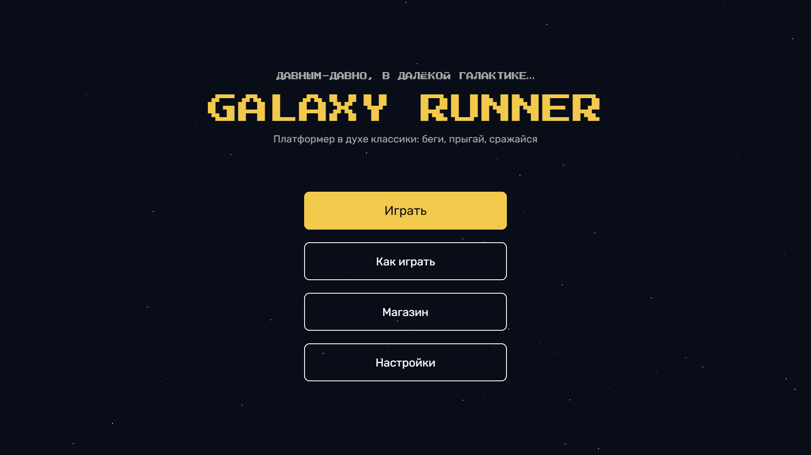
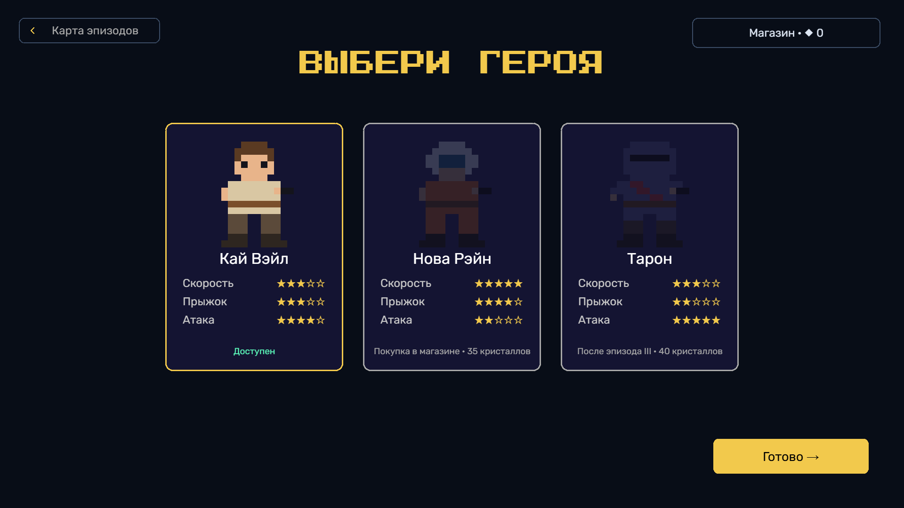
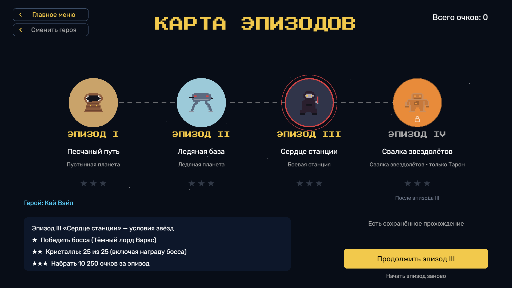
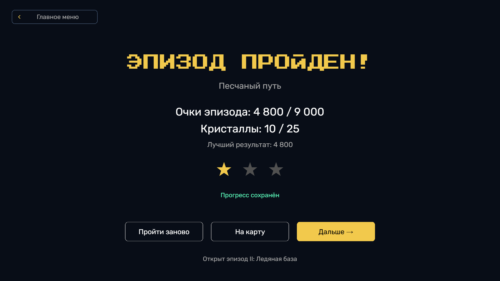
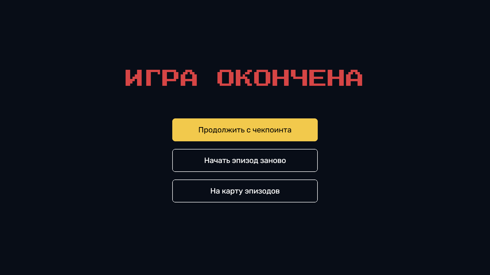
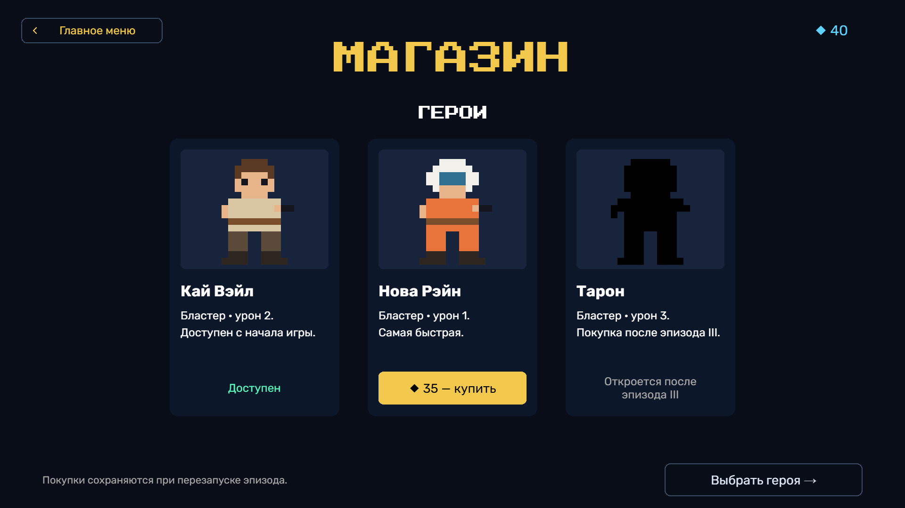
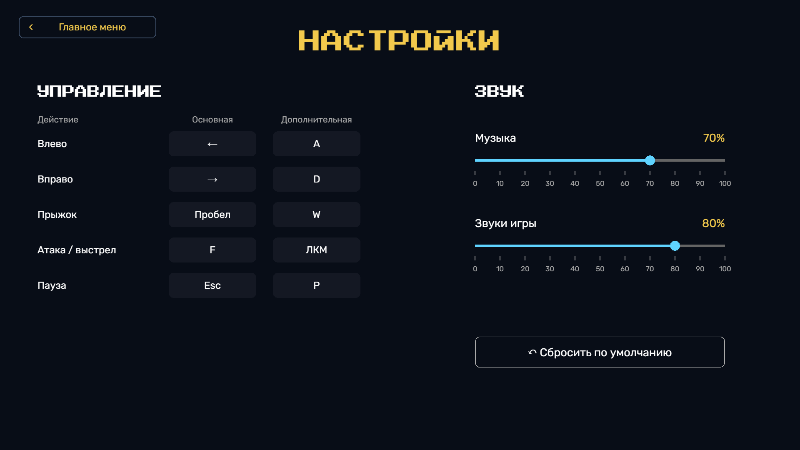
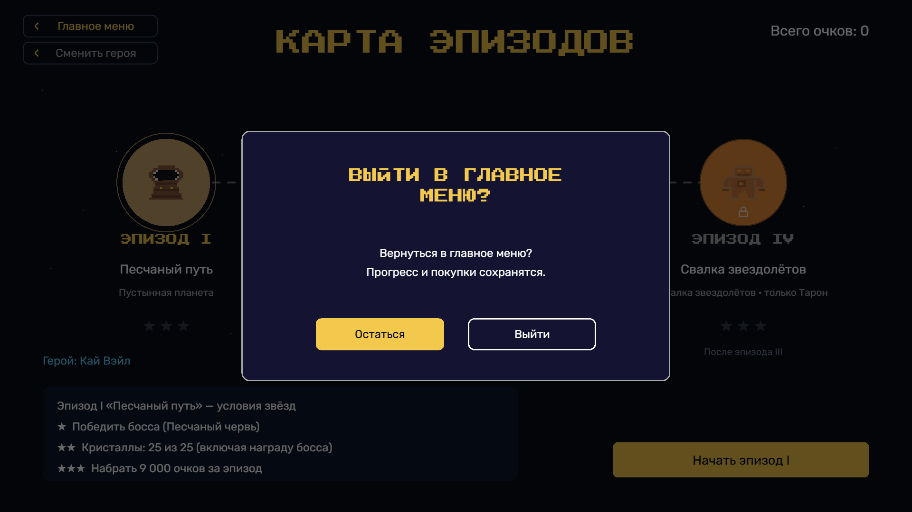
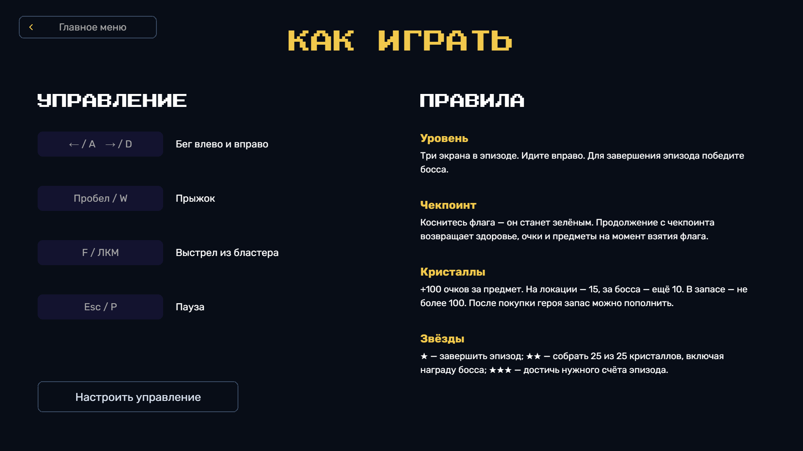
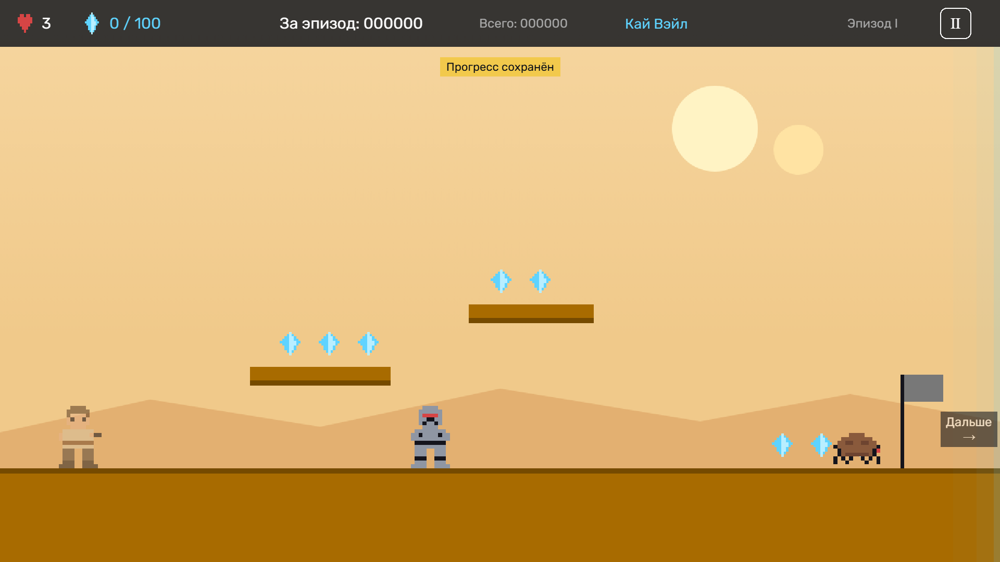

65ced41
Главное меню
Главное меню Масштаб 1.5; допуск отступов 3 экранных пикселя. Клавиатурная навигация и все цвета рамок требуют отдельной проверки.
Все проверки (22)
Пройден — Фон #080D17
Пройден — Надпись «GALAXY RUNNER»
Пройден — GALAXY RUNNER — fontFamily: 'Press Start 2P'
Пройден — GALAXY RUNNER — fontSize: 72px
Пройден — GALAXY RUNNER — color: #F2C94C
Пройден — Надпись «Платформер в духе классики: беги, прыгай, сражайся»
Пройден — Платформер в духе классики: беги, прыгай, сражайся — fontFamily: Rubik
Пройден — Платформер в духе классики: беги, прыгай, сражайся — fontSize: 24px
Пройден — Платформер в духе классики: беги, прыгай, сражайся — color: #A8A8A8
Пройден — Надпись «ДАВНЫМ-ДАВНО, В ДАЛЁКОЙ ГАЛАКТИКЕ…»
Пройден — ДАВНЫМ-ДАВНО, В ДАЛЁКОЙ ГАЛАКТИКЕ… — fontFamily: 'Press Start 2P'
Пройден — ДАВНЫМ-ДАВНО, В ДАЛЁКОЙ ГАЛАКТИКЕ… — fontSize: 18px
Пройден — ДАВНЫМ-ДАВНО, В ДАЛЁКОЙ ГАЛАКТИКЕ… — color: #A8A8A8
Пройден — Кнопка «Играть»
Пройден — Играть — размер 320×60 в масштабе 1.5: {"x":0,"y":0,"width":480,"height":90}
Пройден — Кнопка «Как играть»
Пройден — Как играть — размер 320×60 в масштабе 1.5: {"x":0,"y":120,"width":480,"height":90}
Пройден — Кнопка «Настройки»
Пройден — Настройки — размер 320×60 в масштабе 1.5: {"x":0,"y":360,"width":480,"height":90}
Пройден — Кнопка «Магазин»
Пройден — Магазин — размер 320×60 в масштабе 1.5: {"x":0,"y":240,"width":480,"height":90}
Пройден — Отступы кнопок 20×1.5: [30,30,30]

65ced41
Экран выбора персонажа
Экран выбора персонажа Проверены заголовок, имена трёх героев и наличие кнопок «Готово →» и «Карта эпизодов». Размеры и расположение всех элементов отдельно не измерялись.
Все проверки (7)
Пройден — Надпись «ВЫБЕРИ ГЕРОЯ»
Пройден — Надпись «Кай Вэйл»
Пройден — Надпись «Нова Рэйн»
Пройден — Надпись «Тарон»
Пройден — Кнопка «Готово →»
Пройден — Кнопка «Карта эпизодов»
Пройден — Три героя

65ced41
Карта эпизодов
Карта эпизодов Проверены заголовок, названия четырёх эпизодов и наличие кнопок возврата, смены героя, продолжения и перезапуска. Для проверки подготовлено сохранение эпизода III. Размер каждой планеты отдельно не измерялся. Расширенные подписи и дополнительные элементы согласованы командой.
Все проверки (9)
Пройден — Надпись «КАРТА ЭПИЗОДОВ»
Пройден — Надпись «Песчаный путь»
Пройден — Надпись «Ледяная база»
Пройден — Надпись «Сердце станции»
Пройден — Надпись «Свалка звездолётов»
Пройден — Кнопка «Главное меню»
Пройден — Кнопка «Сменить героя»
Пройден — Кнопка «Начать эпизод заново»
Пройден — Кнопка «Продолжить эпизод III»

65ced41
Игровой экран (HUD)
Игровой экран (HUD)
Все проверки (6)
Пройден — Панель 60×1.5
Пройден — Непрозрачность панели 80%: 0.8
Пройден — Начальные жизни 3
Пройден — Начальные кристаллы 0
Пройден — Два счётчика очков с шестью цифрами: ["За эпизод: 000000","Всего: 000000"]
Пройден — Кнопка «Ⅱ»
65ced41
Меню паузы
Меню паузы
Все проверки (13)
Пройден — Сцена остановлена
Пройден — Надпись «ПАУЗА»
Пройден — ПАУЗА — fontFamily: 'Press Start 2P'
Пройден — ПАУЗА — fontSize: 54px
Пройден — ПАУЗА — color: #F2C94C
Пройден — Кнопка «Продолжить»
Пройден — Продолжить — размер: {"x":960,"y":345,"width":450,"height":75}
Пройден — Кнопка «Начать уровень заново»
Пройден — Начать уровень заново — размер: {"x":960,"y":442.5,"width":450,"height":75}
Пройден — Кнопка «Выйти на карту эпизодов»
Пройден — Выйти на карту эпизодов — размер: {"x":960,"y":840,"width":450,"height":75}
Пройден — Игрок неподвижен на паузе
Пройден — Игра продолжилась
65ced41
Экран «Эпизод пройден»
Экран «Эпизод пройден» Состояние победы подготовлено через менеджер игры, а не полным прохождением боя.
Все проверки (4)
Пройден — Надпись «ЭПИЗОД ПРОЙДЕН!»
Пройден — Кнопка «Пройти заново»
Пройден — Кнопка «На карту»
Пройден — Кнопка «Дальше →»

65ced41
Экран «Игра окончена»
Экран «Игра окончена» Проверен вариант с чекпоинтом; расширенные подписи и отдельный полный рестарт — дополнительный функционал.
Все проверки (7)
Пройден — Надпись «ИГРА ОКОНЧЕНА»
Пройден — ИГРА ОКОНЧЕНА — fontFamily: 'Press Start 2P'
Пройден — ИГРА ОКОНЧЕНА — fontSize: 72px
Пройден — ИГРА ОКОНЧЕНА — color: #D64545
Пройден — Кнопка «Продолжить с чекпоинта»
Пройден — Кнопка «Начать эпизод заново»
Пройден — Кнопка «На карту эпизодов»

65ced41
Экран магазина
Экран магазина Проверены заголовок магазина, имена героев, отображение цены Новы 35 и запрет покупки Тарона до прохождения эпизода III. Размеры и цвета каждой карточки отдельно не проверялись.
Все проверки (9)
Пройден — Надпись «МАГАЗИН»
Пройден — МАГАЗИН — fontFamily: 'Press Start 2P'
Пройден — МАГАЗИН — fontSize: 72px
Пройден — МАГАЗИН — color: #F2C94C
Пройден — Надпись «Кай Вэйл»
Пройден — Надпись «Нова Рэйн»
Пройден — Надпись «Тарон»
Пройден — Цена Новы 35 в интерфейсе
Пройден — Тарон закрыт до эпизода III

65ced41
Экран настроек
Экран настроек Проверены названия разделов, шрифты и размеры заголовков, цвет кнопки возврата, сохранение громкости и отклонение недопустимого значения. Точные размеры и расположение слайдеров отдельно не измерялись.
Все проверки (14)
Пройден — Надпись «НАСТРОЙКИ»
Пройден — НАСТРОЙКИ — fontFamily: 'Press Start 2P'
Пройден — НАСТРОЙКИ — fontSize: 54px
Пройден — НАСТРОЙКИ — color: #F2C94C
Пройден — Надпись «УПРАВЛЕНИЕ»
Пройден — УПРАВЛЕНИЕ — fontSize: 30px
Пройден — Надпись «ЗВУК»
Пройден — ЗВУК — fontSize: 30px
Пройден — Надпись «Музыка»
Пройден — Надпись «Звуки игры»
Пройден — Цвет ссылки жёлтый #F2C94C: #F2C94C
Пройден — Изменение громкости сохраняется
Пройден — Громкость восстановлена
Пройден — Громкость >100% отклонена

65ced41
Экран выхода в меню
Экран выхода в меню Проверяется согласованный маршрут карта → главное меню; выход из паузы на карту является отдельным действием.
Все проверки (9)
Пройден — Надпись «ВЫЙТИ В ГЛАВНОЕ МЕНЮ?»
Пройден — Кнопка «Остаться»
Пройден — Кнопка «Выйти»
Пройден — Повторный клик не дублирует окно
Пройден — Остаться закрывает окно на карте
Пройден — Esc закрывает окно
Пройден — Подтверждение открывает главное меню
Пройден — Выход сохраняет прогресс
Пройден — При повторном входе окно снова открывается

65ced41
Экран «Как играть»
Экран «Как играть»
Все проверки (29)
Пройден — Надпись «КАК ИГРАТЬ»
Пройден — КАК ИГРАТЬ — fontFamily: 'Press Start 2P'
Пройден — КАК ИГРАТЬ — fontSize: 54px
Пройден — КАК ИГРАТЬ — color: #F2C94C
Пройден — Надпись «УПРАВЛЕНИЕ»
Пройден — УПРАВЛЕНИЕ — fontFamily: 'Press Start 2P'
Пройден — УПРАВЛЕНИЕ — fontSize: 36px
Пройден — УПРАВЛЕНИЕ — color: #FFFFFF
Пройден — Надпись «ПРАВИЛА»
Пройден — ПРАВИЛА — fontFamily: 'Press Start 2P'
Пройден — ПРАВИЛА — fontSize: 36px
Пройден — ПРАВИЛА — color: #FFFFFF
Пройден — Надпись «Уровень»
Пройден — Уровень — fontFamily: Rubik
Пройден — Уровень — fontSize: 27px
Пройден — Уровень — color: #F2C94C
Пройден — Надпись «Чекпоинт»
Пройден — Чекпоинт — fontFamily: Rubik
Пройден — Чекпоинт — fontSize: 27px
Пройден — Чекпоинт — color: #F2C94C
Пройден — Надпись «Кристаллы»
Пройден — Кристаллы — fontFamily: Rubik
Пройден — Кристаллы — fontSize: 27px
Пройден — Кристаллы — color: #F2C94C
Пройден — Надпись «Звёзды»
Пройден — Звёзды — fontFamily: Rubik
Пройден — Звёзды — fontSize: 27px
Пройден — Звёзды — color: #F2C94C
Пройден — Цвет ссылки #A8A8A8: #A8A8A8

65ced41
Экран «Сброс настроек»
Экран «Сброс настроек» Заголовок проверяется с учётом переноса строки.
Все проверки (5)
Пройден — Надпись «ВЫ УВЕРЕНЫ, ЧТО ХОТИТЕ СБРОСИТЬ НАСТРОЙКИ?»
Пройден — Кнопка «Отмена»
Пройден — Кнопка «Сбросить»
Пройден — Заголовок помещается в панель: 660
Пройден — Отмена закрывает окно

65ced41
Движение персонажа
Движение персонажа
Все проверки (18)
Пройден — kai right скорость: 300
Пройден — kai rightAlternative скорость: 300
Пройден — kai left скорость: -300
Пройден — kai leftAlternative скорость: -300
Пройден — nova right скорость: 420
Пройден — nova rightAlternative скорость: 420
Пройден — nova left скорость: -420
Пройден — nova leftAlternative скорость: -420
Пройден — taron right скорость: 300
Пройден — taron rightAlternative скорость: 300
Пройден — taron left скорость: -300
Пройден — taron leftAlternative скорость: -300
Пройден — Шкала скорости 1
Пройден — Шкала скорости 2
Пройден — Шкала скорости 3
Пройден — Шкала скорости 4
Пройден — Шкала скорости 5
Пройден — Анимация 4 кадра / 8 FPS
65ced41
Прыжок
Прыжок
Все проверки (11)
Пройден — kai скорость прыжка: -900
Пройден — kai нет прыжка в воздухе
Пройден — nova скорость прыжка: -929.51600308978
Пройден — nova нет прыжка в воздухе
Пройден — taron скорость прыжка: -869.4826047713664
Пройден — taron нет прыжка в воздухе
Пройден — Высота по характеристике 1
Пройден — Высота по характеристике 2
Пройден — Высота по характеристике 3
Пройден — Высота по характеристике 4
Пройден — Высота по характеристике 5
65ced41
Атака
Атака
Все проверки (13)
Пройден — kai снаряд создан
Пройден — kai скорость 600×1.5
Пройден — kai задержка между выстрелами
Пройден — kai урон по атаке
Пройден — nova снаряд создан
Пройден — nova скорость 600×1.5
Пройден — nova задержка между выстрелами
Пройден — nova урон по атаке
Пройден — taron снаряд создан
Пройден — taron скорость 600×1.5
Пройден — taron задержка между выстрелами
Пройден — taron урон по атаке
Пройден — Дальность по требованию 400
65ced41
Сбор предметов
Сбор предметов Пользователь подтвердил лимит текущего кошелька, а не суммарного получения за игру.
Все проверки (11)
Пройден — Эпизод 1 содержит 15 кристаллов
Пройден — Эпизод 2 содержит 15 кристаллов
Пройден — Эпизод 3 содержит 15 кристаллов
Пройден — Эпизод 4 содержит 15 кристаллов
Пройден — +100 очков за кристалл
Пройден — Один предмет один раз
Пройден — Рестарт откатывает награду
Пройден — После траты кошелёк снова пополняется: 66
Пройден — 99 + кристалл = 100: 100
Пройден — Кристалл при полном кошельке обрабатывается
Пройден — Кошелёк ограничен 100: 100
65ced41
Победа над врагом
Победа над врагом Реальное уничтожение и прыжок проверены на противниках первой сцены, HP всех типов проверены по каталогу.
Все проверки (12)
Пройден — legionnaire HP: 2
Пройден — sand_beetle HP: 2
Пройден — shooter HP: 3
Пройден — scout_drone HP: 2
Пройден — snow_legionnaire HP: 3
Пройден — heavy_walker HP: 4
Пройден — dark_guard HP: 4
Пройден — rust_drone HP: 1
Пройден — junk_crab HP: 3
Пройден — Выстрел Кая уничтожает легионера с 2 HP
Пройден — Награда 600 один раз
Пройден — Прыжок снимает 1 HP
65ced41
Битва с боссом
Битва с боссом Все четыре арены, HP, награды и переход в фазу 2 проверены в подготовленных состояниях. Все последовательности атак и полные бои не пройдены.
Все проверки (22)
Пройден — Эпизод 1 босс имеет 100 HP
Пройден — Босс только на экране 3
Пройден — Награда босса 1
Пройден — sand_worm имеет фазу 2 при 50 HP
Пройден — Червь неуязвим под землёй
Пройден — Согласованное время появления червя 3.5 секунды: 3500
Пройден — Удар босса снимает 0.5 сердца
Пройден — Эпизод 2 босс имеет 100 HP
Пройден — Босс только на экране 3
Пройден — Награда босса 2
Пройден — walking_tank имеет фазу 2 при 50 HP
Пройден — Удар босса снимает 0.5 сердца
Пройден — Эпизод 3 босс имеет 100 HP
Пройден — Босс только на экране 3
Пройден — Награда босса 3
Пройден — lord_varx имеет фазу 2 при 50 HP
Пройден — Удар босса снимает 0.5 сердца
Пройден — Эпизод 4 босс имеет 100 HP
Пройден — Босс только на экране 3
Пройден — Награда босса 4
Пройден — scrap_golem имеет фазу 2 при 50 HP
Пройден — Удар босса снимает 0.5 сердца
65ced41
Сохранение прогресса
Сохранение прогресса
Все проверки (4)
Пройден — Сохранение сеанса
Пройден — Позиция восстановлена
Пройден — Награды восстановлены
Пройден — Повреждённые данные сбрасываются
65ced41
Начисление очков
Начисление очков Уточнение пользователя 20.11.2026: бонус +500 исключён из требований.
Все проверки (11)
Пройден — rust_drone награда
Пройден — sand_beetle награда
Пройден — legionnaire награда
Пройден — scout_drone награда
Пройден — shooter награда
Пройден — snow_legionnaire награда
Пройден — junk_crab награда
Пройден — heavy_walker награда
Пройден — dark_guard награда
Пройден — Призванные враги не дают очков
Пройден — Бонус за отсутствие урона исключён; только награда босса: 4800
65ced41
Начисление звёзд
Начисление звёзд По указанию пользователя актуальны пороги из кода: 9000/10250/10250/12500. Проверены обе стороны границы на подготовленных очках. Достижимость очков полным прохождением не входит в этот тест; известное ограничение эпизода III: сумма штатных наград 9050 меньше порога 10250, баланс оставлен без изменений по указанию пользователя.
Все проверки (12)
Пройден — Пороги уменьшены на 500: 9000/10250/10250/12500: {"1":9000,"2":10250,"3":10250,"4":12500}
Пройден — За босса 1 звезда: 1
Пройден — Все 25 кристаллов дают вторую звезду: 2
Пройден — Звёзды сохраняются
Пройден — Эпизод 1 граница 8999: {"episodeId":1,"score":8999,"maxScore":9000,"crystals":25,"crystalCount":25,"stars":2,"bestScore":8999,"nextEpisodeId":2,"saved":true}
Пройден — Эпизод 1 граница 9000: {"episodeId":1,"score":9000,"maxScore":9000,"crystals":25,"crystalCount":25,"stars":3,"bestScore":9000,"nextEpisodeId":2,"saved":true}
Пройден — Эпизод 2 граница 10249: {"episodeId":2,"score":10249,"maxScore":10250,"crystals":25,"crystalCount":25,"stars":2,"bestScore":10249,"nextEpisodeId":3,"saved":true}
Пройден — Эпизод 2 граница 10250: {"episodeId":2,"score":10250,"maxScore":10250,"crystals":25,"crystalCount":25,"stars":3,"bestScore":10250,"nextEpisodeId":3,"saved":true}
Пройден — Эпизод 3 граница 10249: {"episodeId":3,"score":10249,"maxScore":9050,"crystals":25,"crystalCount":25,"stars":2,"bestScore":10249,"nextEpisodeId":4,"saved":true}
Пройден — Эпизод 3 граница 10250: {"episodeId":3,"score":10250,"maxScore":9050,"crystals":25,"crystalCount":25,"stars":3,"bestScore":10250,"nextEpisodeId":4,"saved":true}
Пройден — Эпизод 4 граница 12499: {"episodeId":4,"score":12499,"maxScore":12500,"crystals":25,"crystalCount":25,"stars":2,"bestScore":12499,"nextEpisodeId":null,"saved":true}
Пройден — Эпизод 4 граница 12500: {"episodeId":4,"score":12500,"maxScore":12500,"crystals":25,"crystalCount":25,"stars":3,"bestScore":12500,"nextEpisodeId":null,"saved":true}
65ced41
Влияние характеристик героя
Влияние характеристик героя
Все проверки (4)
Пройден — Три набора характеристик
Пройден — Характеристика Скорость у трёх героев
Пройден — Характеристика Прыжок у трёх героев
Пройден — Характеристика Атака у трёх героев
65ced41
Чекпоинт (флаг)
Чекпоинт (флаг)
Все проверки (5)
Пройден — Сохранение флага
Пройден — Возрождение на флаге
Пройден — Позиция флага
Пройден — Награды откатились к флагу
Пройден — Перезапуск сбросил флаг
65ced41
Здоровье героя
Здоровье героя Пользователь подтвердил восстановление сохранённого здоровья чекпоинта.
Все проверки (5)
Пройден — Три сердца на старте
Пройден — Противник снимает сердце
Пройден — Босс снимает половину
Пройден — Возрождение восстанавливает здоровье чекпоинта: 1
Пройден — При нуле здоровья состояние Lose: 3
65ced41
Отчет по результатам проекта
Отчет по результатам проекта Проверку итогового отчёта и презентации исключил пользователь.
Все проверки (0)
65ced41
Презентация по результатам проекта
Презентация по результатам проекта Проверку итогового отчёта и презентации исключил пользователь.
Все проверки (0)
65ced41
Производительность (30 FPS)
Производительность (30 FPS) Измерены первые экраны четырёх эпизодов; длительный замер боёв с боссами не проводился.
Все проверки (5)
Пройден — Эпизод 1 не ниже 30 FPS (5 секунд): {"min":135.22870635986328,"max":141.3301766216755}
Пройден — Эпизод 2 не ниже 30 FPS (5 секунд): {"min":142.68572434969246,"max":143.89274872001988}
Пройден — Эпизод 3 не ниже 30 FPS (5 секунд): {"min":144.2828783662584,"max":144.59661908102035}
Пройден — Эпизод 4 не ниже 30 FPS (5 секунд): {"min":144.26420934632517,"max":144.6262740061041}
Пройден — Canvas 1920×1080
65ced41
Совместимость (браузеры)
Совместимость (браузеры) По согласованию пользователя проверен имеющийся браузер. Отдельная совместимость с Chrome не заявляется.
Все проверки (1)
Пройден — Игра работает в имеющемся браузере
65ced41
Удобство управления
Удобство управления Реальная клавиатура дополнительно проверяется через интерфейс браузера; удобство для разных пользователей не измеряется.
Все проверки (3)
Пройден — Стандартные назначения
Пройден — ЛКМ создаёт снаряд
Пройден — Esc распознаётся
65ced41
Надёжность (восстановление)
Надёжность (восстановление) В конце прогона выполняется настоящая перезагрузка страницы с продолжением сохранённого сеанса. Завершение процесса браузера не воспроизводится.
Все проверки (4)
Пройден — Сеанс сохранён перед перезагрузкой
Пройден — Предлагается продолжение после перезагрузки
Пройден — Позиция сохранённого сеанса восстановлена
Пройден — Восстановление за 15 секунд: 1015
65ced41
Локализация (русский)
Локализация (русский) GALAXY RUNNER — название игры по FR, допустимое исключение из русификации.
Все проверки (1)
Пройден — Русские надписи, кроме согласованного названия игры
65ced41
Сохранение в браузере
Сохранение в браузере
Все проверки (3)
Пройден — Запись профиля
Пройден — JSON сохранён в настоящем localStorage
Пройден — Чтение после инициализации
65ced41
Операционная система
Операционная система Конфигурация хоста: Windows 11 25H2, build 26200; проверена эта конфигурация.
Все проверки (2)
Пройден — Браузер запущен на Windows: Mozilla/5.0 (Windows NT 10.0; Win64; x64) AppleWebKit/537.36 (KHTML, like Gecko) Chrome/157.0.0.0 Safari/537.36
Пройден — Меню, сцены и уровень созданы
65ced41
Язык программирования
Язык программирования Настройки TypeScript/ES6 проверяются дополнительно в сборщике отчёта.
Все проверки (3)
Пройден — Реальный HTML5 Canvas
Пройден — Phaser renderer существует
Пройден — TypeScript ES6+: TypeScript ~7.0.2; target es2023; module esnext
65ced41
Используемые библиотеки
Используемые библиотеки Состав зависимостей и дополнительные плагины проверяются по package.json в сборщике отчёта.
Все проверки (2)
Пройден — Phaser основной версии 4: 4.2.1
Пройден — Дополнительные прямые библиотеки: phaser, phaser4-rex-plugins; rex UI — дополнительный функционал из PROJECT_CONTEXT.md, учтён по переписке команды
65ced41
Начать игру
Начать игру Функциональный запуск проверен. Исследование с независимым неподготовленным человеком не проводилось.
Все проверки (2)
Пройден — Кнопка «Играть»
Пройден — Переход без регистрации
65ced41
Выбрать персонажа
Выбрать персонажа
Все проверки (8)
Пройден — Три персонажа
Пройден — Кай доступен сразу
Пройден — Нова до покупки закрыта
Пройден — Тарон до III закрыт
Пройден — Покупка Новы
Пройден — Выбор Новы
Пройден — Покупка Тарона после III
Пройден — Выбор Тарона
65ced41
Выбрать эпизод
Выбрать эпизод
Все проверки (6)
Пройден — 4 названия
Пройден — Эпизод II закрыт
Пройден — После 1 открыт следующий
Пройден — После 2 открыт следующий
Пройден — После 3 открыт следующий
Пройден — IV нельзя запустить Каем
65ced41
Пройти уровень
Пройти уровень Переходы и обработка победы реальные; победа инициирована тестовым вызовом win(), а не полным боем.
Все проверки (7)
Пройден — Начальный экран 0
Пройден — Переход на второй экран
Пройден — Переход к боссу
Пройден — На арене есть босс
Пройден — Нет четвёртого экрана
Пройден — Край арены сам не завершает уровень
Пройден — После завершения показан результат
65ced41
Поставить паузу
Поставить паузу
Все проверки (3)
Пройден — Esc активирует паузу
Пройден — Физика остановлена
Пройден — Продолжение
